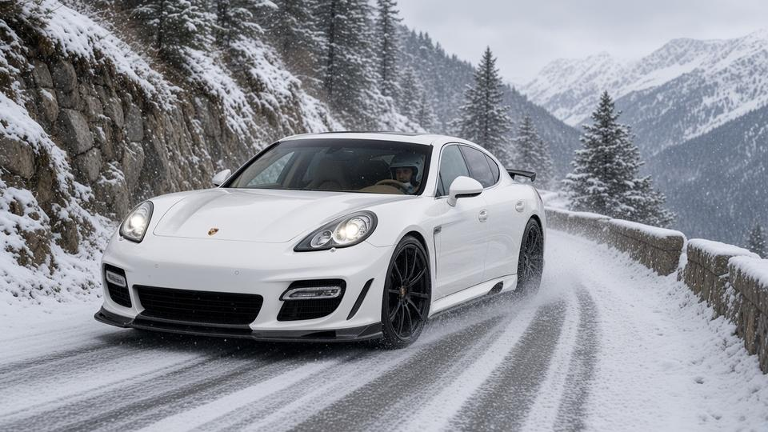
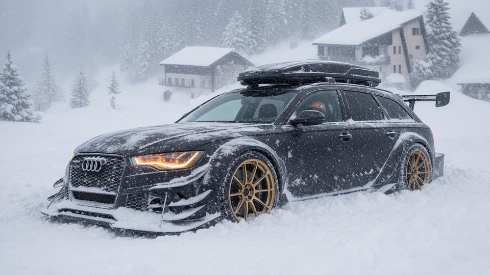
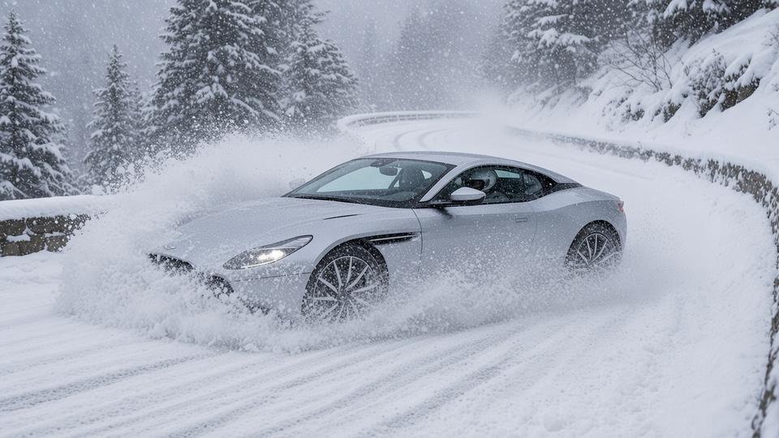

Final results
| Pos | Player | Car | Time | Gap | Pts |
|---|---|---|---|---|---|
| 1 | _baron_98 | Gemballa GTP 720 '10 | 46:08.392 | Winner | 10 |
| 2 | thefoxywolfy | Aston Martin DB11 '16 | 57:54.697 | +11:46.305 | 8 |
| — | biometric_human | Audi RS6 DTM Stertman/Caresto '15 | DNF (stuck in a snowbank) | — | 0 |
| — | velocevelocevelo | No car | DNS (no Pick 3 car) | — | 0 |
Group-round points: 1st 10, 2nd 8, 3rd 6, 4th 4. A DNF or DNS scores 0. velocevelocevelo has no Pick 3 car (DNS).
The venue
Stage format
Weather
| Split | Conditions |
|---|---|
| Split 1 · La Bollène climb | 🌨️ Light snow |
| Split 2 · Hairpins to the summit | 🌨️ Light snow |
| Split 3 · Summit | ❄️ Heavy blizzard |
| Finish · Descent to Sospel | ❄️ Heavy blizzard |
Start order
| Start | Player | Car | HP | Torque | Weight | Drive | Factory tires |
|---|---|---|---|---|---|---|---|
| 1 | thefoxywolfy | Aston Martin DB11 '16 | 600 | 516 lb-ft | 4,138 lb | RWD | Bridgestone Potenza S007 (255/40ZR20 / 295/35ZR20) |
| 2 | biometric_human | Audi RS6 DTM Stertman/Caresto '15 | 950 | 850 lb-ft | 4,299 lb | AWD | not published (one-off on DTM-style wheels) (not published / not published) |
| 3 | _baron_98 | Gemballa GTP 720 '10 | 720 | 708 lb-ft | 4,343 lb | AWD | not published (22-in (10J), ZR22 — size not published / 22-in (11J), ZR22 — size not published) |
Start order drawn at random: one car at a time, starting one minute apart. Everyone runs their Pick 3 car. velocevelocevelo has no Pick 3 car and doesn't start (DNS, 0 pts).
Build-up
The Pick 3 round ends with a rally: the Col de Turini stage of the Rallye Monte-Carlo in the French Alps. It's 19.3 miles (31.0 km) of closed mountain road from La Bollène-Vésubie, up the hairpins to the 1,607 m summit and down toward Sospel.
It's a timed stage, not a race on track: one car at a time, starting one minute apart, with split times at three points and the fastest total time winning. Everyone is on road tyres, with no studs. The start order is drawn at random: thefoxywolfy goes first, then biometric_human, then _baron_98. velocevelocevelo is a DNS, with no Pick 3 car. Light snow falls on the climb, then a blizzard hits from the summit to the finish.
Split by split
Split 1 · La Bollène climb

_baron_98 is fastest in the snow, 10:05.0. biometric_human misses a braking point and is 28.2s down. The rear-drive DB11 struggles for grip and thefoxywolfy is 1:50.9 down.
| Pos | Player | Car |
|---|---|---|
| 1 | _baron_98 | Gemballa GTP 720 '10 |
| 2 | biometric_human | Audi RS6 DTM Stertman/Caresto '15 |
| 3 | thefoxywolfy | Aston Martin DB11 '16 |
Split 2 · Hairpins to the summit
biometric_human half-spins in a hairpin and loses 6.8s. _baron_98 leads by 1:12.8.
| Pos | Player | Car |
|---|---|---|
| 1 | _baron_98 | Gemballa GTP 720 '10 |
| 2 | biometric_human | Audi RS6 DTM Stertman/Caresto '15 |
| 3 | thefoxywolfy | Aston Martin DB11 '16 |
Split 3 · Summit

The blizzard hits. biometric_human's low RS6 slides into a snowbank near the summit and is stuck. He is out. _baron_98 leads thefoxywolfy by 7:12.4.
| Pos | Player | Car |
|---|---|---|
| 1 | _baron_98 | Gemballa GTP 720 '10 |
| 2 | thefoxywolfy | Aston Martin DB11 '16 |
Finish · Descent to Sospel

thefoxywolfy misses a braking point and slides into a snowbank, losing 45.4s before he digs out. _baron_98 wins the stage by 11:46.3.
| Pos | Player | Car |
|---|---|---|
| 1 | _baron_98 | Gemballa GTP 720 '10 |
| 2 | thefoxywolfy | Aston Martin DB11 '16 |
_baron_98 wins Group 1 Pick 3 Race 4, the Col de Turini rally stage, in the Gemballa GTP 720 '10: 46:08.392 for the 31.0 km stage, 11:46.305 ahead of thefoxywolfy.
Points: 1. _baron_98 (10 pts), 2. thefoxywolfy (8 pts); biometric_human DNF (stuck in a snowbank near the summit, split 3, 0 pts); velocevelocevelo DNS (no Pick 3 car, 0 pts).
Fastest split: _baron_98, 9:53.377 on split 2 (hairpins to the summit).
Split times
| Player | Car | S1 | S2 | S3 | S4 | Incidents |
|---|---|---|---|---|---|---|
| _baron_98 | Gemballa GTP 720 '10 | 10:04.955 | 9:53.377 | 13:23.812 | 12:46.248 | S3 full spin, +35.8 s |
| thefoxywolfy | Aston Martin DB11 '16 | 11:55.871 | 11:52.715 | 16:45.938 | 17:20.173 | S4 missed braking point, +6.9 s; S4 slid into a snowbank, +45.4 s |
| biometric_human | Audi RS6 DTM Stertman/Caresto '15 | 10:33.178 | 10:37.966 | — | — | S1 missed braking point, +2.7 s; S2 half-spin at a hairpin, +6.8 s; S3 DNF, stuck in a snowbank near the summit |
Running time at each split
| Player | Car | Split 1 | Split 2 | Split 3 | Finish |
|---|---|---|---|---|---|
| _baron_98 | Gemballa GTP 720 '10 | 10:04.955 | 19:58.332 | 33:22.144 | 46:08.392 |
| thefoxywolfy | Aston Martin DB11 '16 | 11:55.871 (+1:50.916) | 23:48.586 (+3:50.254) | 40:34.524 (+7:12.380) | 57:54.697 (+11:46.305) |
| biometric_human | Audi RS6 DTM Stertman/Caresto '15 | 10:33.178 (+28.223) | 21:11.144 (+1:12.812) | DNF | — |
Elapsed stage time at each split point, with the gap to the fastest car at that point. Split times table above: time for each section (S1 La Bollène climb, S2 hairpins to the summit, S3 summit, S4 descent to Sospel).